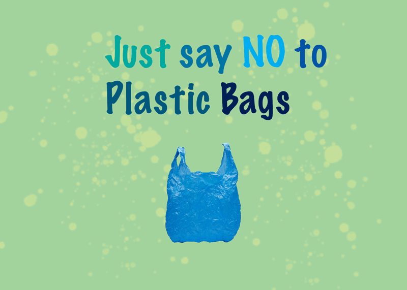
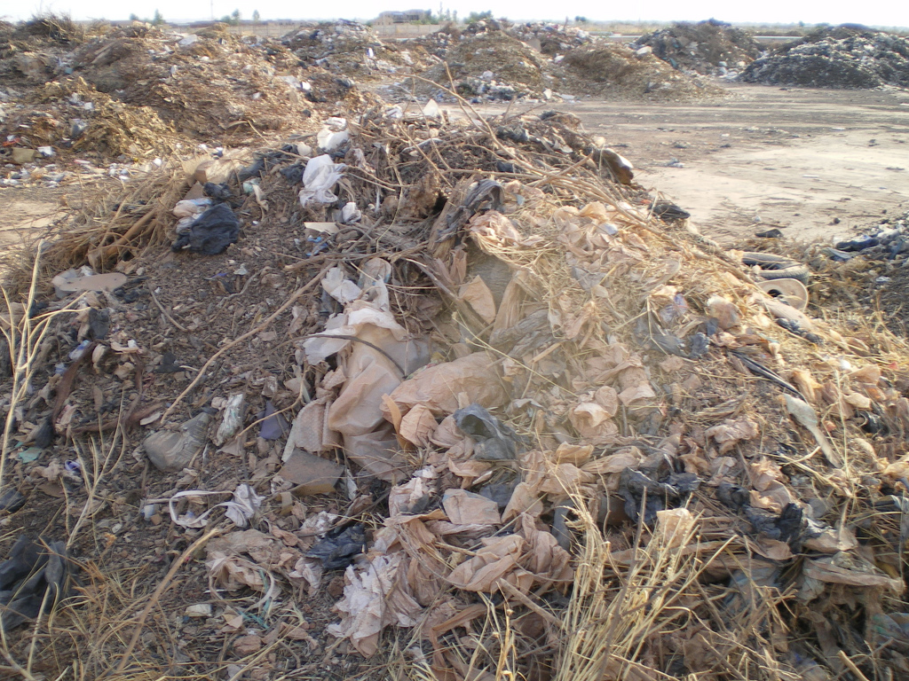
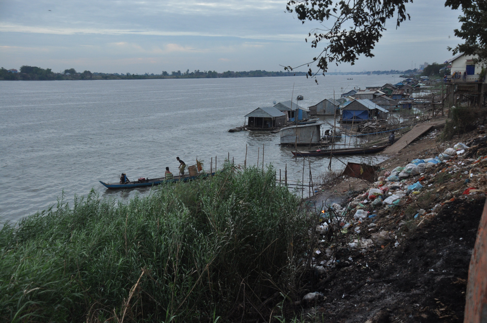
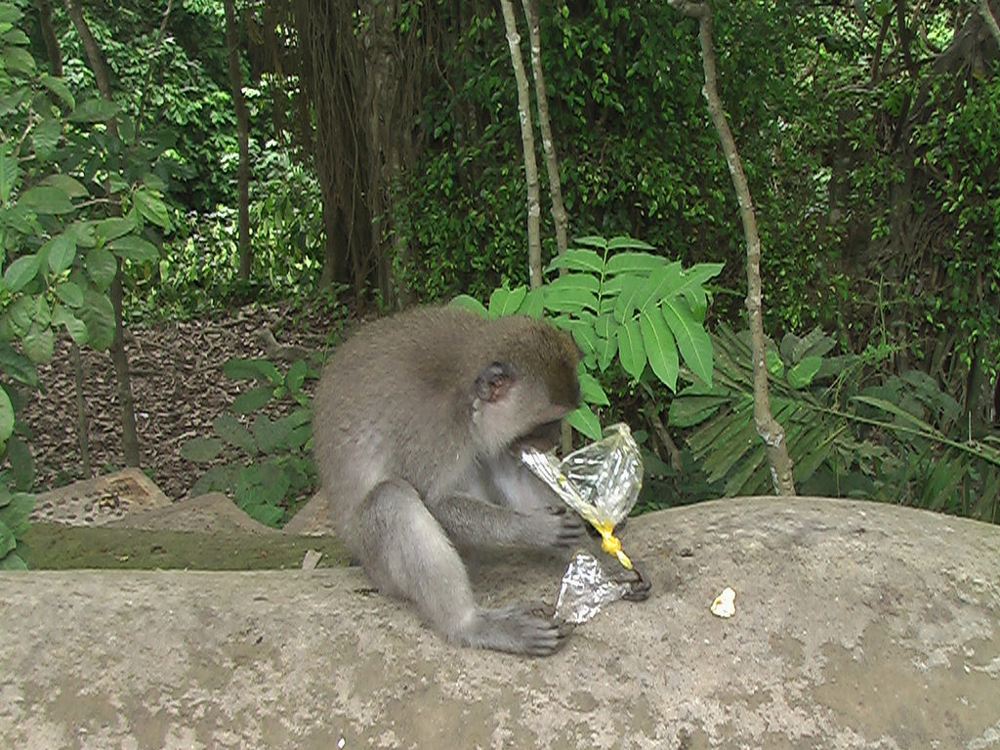

Plastic Bags Recycling

People should not use plastic bags because they do not destroy naturally, litter the landscape and kill animals.
Plastic Bags do not destroy naturally

"plastic bags: highest fraction in domestic waste - Sacs plastiques: fraction importante dans les d\xe9chets m\xe9nagers" Sustainable sanitation CC BY 2.0
One of the worst environmental effects is that plastic bags cannot be destroyed naturally.
- They are made of petroleum.
- The decomposition takes about 400 years. No one will live so long to witness the decomposition of the plastic bag.
- And to make plastic bags, 60 to 100 million barrels of oil are needed every year around the world.
Plastic bags litter the landscape.

"Floating along shore and more reasons to ban plastic bags from the world." by b.ciccotelli is licensed under CC BY-NC 2.0
Plastic bags litter the landscape. Once they are used, most bags go into landfills.
- Each year, more and more bags are ending up littering the environment.
- Once they become litter, plastic bags find their way into the oceans, rivers, parks, and streets.
- If they are burned, they infuse the air with toxic fuel.
Plastic bags kill animals.

"Macaques Love Plastic Bags" by avalpert is licensed under CC BY-NC-ND 2.0
Plastic bags kill animals.
- About 100,000 marine animals, such as dolphins, turtles, and others are killed by plastic bags.
- Many animals ingest plastic bags, mistaking them for food, and therefore, they die.
- And worse, the ingested plastic bag remains intact even after the death and decomposition of the animal.
- In addition, they lie around in the landscape where another victim may eat it again.